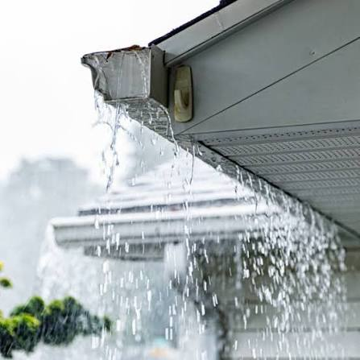
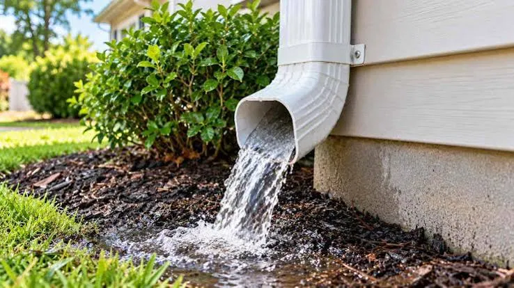
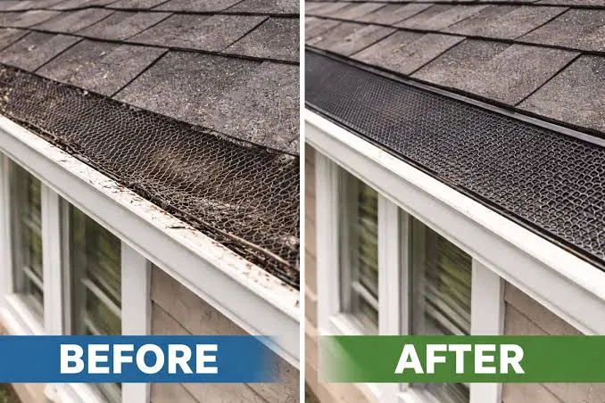

Gutter Cleaning in Atco, GA
Keep Your Gutters Clear Before the Next Big Rain
Leaves, pine needles, and debris can clog gutters, causing water to overflow near your roof, siding, walkways, or foundation. Our gutter cleaning service helps homeowners in Atco and nearby Cartersville with gutter debris removal, downspout cleaning, and basic gutter checks. We create a cleaning plan based on each property’s gutter condition.
Local Weather and Gutter Challenges in Atco
Atco is a historic community within Cartersville, known for its beautiful setting near Pettit Creek and the ATCO Mill Village.
With 48 to 50 inches of annual rainfall and heavy seasonal debris from local trees, gutters here work overtime. Fall leaf drop and spring storms quickly fill gutters with leaves, pine needles, and branches.
If not regularly maintained, this debris blocks water flow and downspouts, increasing the risk of overflow and water damage to your home.

Does heavy rain in Atco, GA make regular gutter cleaning important?
Yes, heavy rain can make regular gutter cleaning important.
Our Gutter Cleaning Services

Downspout Cleaning in Atco
Downspouts are a key part of the drainage system. Cleaning the gutter without checking the downspout can leave a blockage in place. A proper check looks for signs that water is not moving through the downspout as it should.
Downspout Cleaning services →Gutter Guard Installation
Keep leaves, pine needles, and heavy debris out of your gutters permanently. We install premium, durable mesh gutter guards that prevent blockages and protect your Atco home all year round.
Gutter Guard Installation services →
Does your gutter cleaning service include downspout cleaning?
Yes, our gutter cleaning service includes downspout cleaning.
Do you provide professional gutter cleaning in Atco, GA?
Yes, we provide professional gutter cleaning in Atco, GA.
Why Choose Us for Gutter Cleaning in Atco, GA?
We are there for you
Our comprehensive gutter cleaning process ensures your home is protected from water damage, from the first inspection to the final cleanup.
Areas We Serve
Community & Zip Codes
Atco is part of the wider Cartersville community. Cartersville City Schools lists Cartersville Primary School, Cartersville Elementary School, Cartersville Middle School, and Cartersville High School.
Georgia Highlands College also has a Cartersville instructional site on Highway 20 NE.
For recreation, nearby Cartersville facilities include Dellinger Park, Pettit Creek Trail, Hicks Park, the Cartersville Sports Complex, and other city parks.
Service ZIP Codes
Parts of these ZIP areas also cover nearby communities such as Euharlee, Emerson, and Cassville.
Do you serve homeowners throughout Atco, GA?
Yes, we serve homeowners throughout Atco, GA.
Frequently Asked Questions
How much does gutter cleaning cost in Atco, GA?
The price depends on factors such as the size of the home, gutter length, number of levels, debris buildup, gutter guards, and downspout condition. Ask for a quote based on the actual property rather than relying on a general price.
How often should gutters be cleaned in Atco?
Many homes need seasonal attention, especially after major leaf fall. A property surrounded by mature trees may need more frequent cleaning.
Does gutter cleaning include downspouts?
It should be clear in the service scope. Ask whether downspout cleaning and water flow checks are included before scheduling.
Is gutter cleaning worth paying for?
For homeowners who do not want to climb ladders or deal with roof edge work, hiring a gutter cleaner can save time and reduce the need to handle the work themselves. Ladder safety is also a real concern.
Can I clean my gutters myself?
You can, but use care. A stable ladder, safe footing, and another person nearby can reduce the risk of a fall. Do not work from an unsafe roof position just to reach a gutter.
Find Gutter Cleaning Service in Atco
Use the map to locate the Atco service area within Cartersville and Bartow County. The map should be centered on Atco, GA, with the surrounding Cartersville area visible. Useful local reference points include Sugar Valley Road, Cassville Road, Goodyear Avenue, Pettit Creek, the ATCO Goodyear Mill and Mill Village Historic District, and the Cartersville Sports Complex. This makes it easier for local homeowners to confirm that the service area covers their part of Atco.
Get Your Gutters Ready for the Next Rain
Request a Gutter Cleaning Quote in Atco, GA
If your gutters are overflowing or downspouts are clogged, it's time for a professional cleaning. Our goal is simple: clear the debris, ensure proper drainage, and leave your property spotless.
Contact us today for a free, transparent quote for your Atco home.